From “Attention is All You Need”, attention is defined in terms of Queries, Keys, and Values matrices - calculated through a learnable linear layer.
First step in Attention is calculation of Q,K,V values:
Note: It changes the length of the tokens from the token_len or dim (e.g. 49) to the channels or chan parameter (e.g. 64). Notice the bottom matrix of Q, K, V says “Projected Length of Tokens”
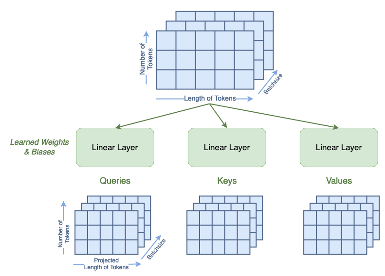
Now calculate the Attention “Attention” values with formula:
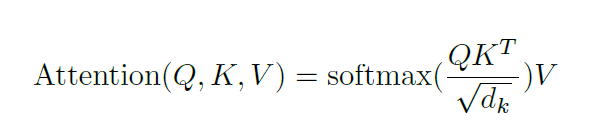
i.e.
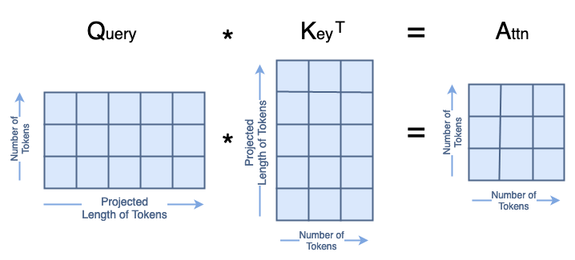
But we do it in steps:
2.1
Step-2A
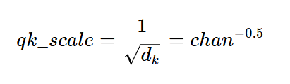
Step-2B: Scoring
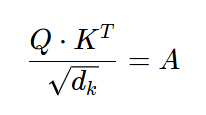
Step-3:
Step-2C: Softmax
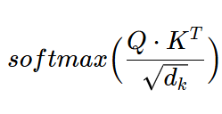
Step-2D:
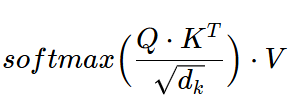
This results in the following shape:
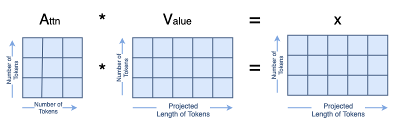
Step-4: Skip Connection
Note: Shape of new X can be different from input X. So, we use V for skip connection (by flattening it’s attention head dimension)
import torchimport torch.nn as nnclass Attention(nn.Module):def__init__(self, dim: int, chan: int, num_heads: int=1, qkv_bias: bool=False, qk_scale: float=None):""" Attention Module Args: dim (int): input size of a single token chan (int): resulting size of a single token (channels) num_heads(int): number of attention heads in MSA qkv_bias (bool): determines if the qkv layer learns an addative bias qk_scale (NoneFloat): value to scale the queries and keys by; if None, queries and keys are scaled by ``head_dim ** -0.5`` """super().__init__()## Define Constantsself.num_heads = num_headsself.chan = chanself.head_dim =self.chan //self.num_headsself.scale = qk_scale orself.head_dim **-0.5assertself.chan %self.num_heads ==0, '"Chan" must be evenly divisible by "num_heads".'## Define Layersself.qkv = nn.Linear(dim, chan *3, bias=qkv_bias)#### Each token gets projected from starting length (dim) to channel length (chan) 3 times (for each Q, K, V)self.proj = nn.Linear(chan, chan)def forward(self, x): B, N, C = x.shape## Dimensions: (batch, num_tokens, token_len)## Calcuate QKVs qkv =self.qkv(x).reshape(B, N, 3, self.num_heads, self.head_dim).permute(2, 0, 3, 1, 4)#### Dimensions: (3, batch, heads, num_tokens, chan/num_heads = head_dim) q, k, v = qkv[0], qkv[1], qkv[2]## Calculate Attention attn = (q *self.scale) @ k.transpose(-2, -1) attn = attn.softmax(dim=-1)#### Dimensions: (batch, heads, num_tokens, num_tokens)## Attention Layer x = (attn @ v).transpose(1, 2).reshape(B, N, self.chan)#### Dimensions: (batch, heads, num_tokens, chan)## Projection Layers x =self.proj(x)## Skip Connection Layer v = v.transpose(1, 2).reshape(B, N, self.chan) x = v + x #### Because the original x has different size with current x, use v to do skip connectionreturn x
c:\Users\mgupta70\AppData\Local\anaconda3\envs\myenv\lib\site-packages\torch\utils\_pytree.py:185: FutureWarning: optree is installed but the version is too old to support PyTorch Dynamo in C++ pytree. C++ pytree support is disabled. Please consider upgrading optree using `python3 -m pip install --upgrade 'optree>=0.13.0'`.
warnings.warn(
# Step 1: Calculate Q, K, Vqkv = A.qkv(x)print(qkv.shape)print('192 is basically 3x64, 3 is because of q, k, v')print('')# Reshape qkv to get q, k, vprint('-- Reshaping --')qkv = qkv.reshape(B, N, 3, A.num_heads, A.head_dim).permute(2, 0, 3, 1, 4)print(qkv.shape)print('\t3: for q, k, v\n\t13: batchsize\n\t1: num_heads\n\t100: num_tokens\n\t64: head_dim=(channels/num_heads) = 64/1 = 64')
torch.Size([13, 100, 192])
192 is basically 3x64, 3 is because of q, k, v
-- Reshaping --
torch.Size([3, 13, 1, 100, 64])
3: for q, k, v
13: batchsize
1: num_heads
100: num_tokens
64: head_dim=(channels/num_heads) = 64/1 = 64
q, k, v = qkv[0], qkv[1], qkv[2]print('See that the dimensions for queries, keys, and values are all the same:')print('\tShape of Q:', q.shape, '\n\tShape of K:', k.shape, '\n\tShape of V:', v.shape)print('Dimensions for Queries are \n\tbatchsize:', q.shape[0], '\n\tattention heads:', q.shape[1], '\n\tnumber of tokens:', q.shape[2], '\n\tnew length of tokens:', q.shape[3])
See that the dimensions for queries, keys, and values are all the same:
Shape of Q: torch.Size([13, 1, 100, 64])
Shape of K: torch.Size([13, 1, 100, 64])
Shape of V: torch.Size([13, 1, 100, 64])
Dimensions for Queries are
batchsize: 13
attention heads: 1
number of tokens: 100
new length of tokens: 64
Scaling factor: 1/sqrt(head_dim)) = 1/(64)**(0.5) = 0.125
Dimensions for Attn are: torch.Size([13, 1, 100, 100])
batchsize: 13
attention heads: 1
number of tokens: 100
number of tokens: 100
# Step 3: Normalize Attention with Softmaxattn = attn.softmax(dim=-1)print('Dimensions for Attn after softmax are:', attn.shape, '\n\tbatchsize:', attn.shape[0], '\n\tattention heads:', attn.shape[1], '\n\tnumber of tokens:', attn.shape[2], '\n\tnumber of tokens:', attn.shape[3])# Step 4: Calculate "Attention" valuesx = attn @ vprint('Dimensions for Attn after softmax are:', x.shape, '\n\tbatchsize:', x.shape[0], '\n\tattention heads:', x.shape[1], '\n\tnumber of tokens:', x.shape[2], '\n\tlength of tokens:', x.shape[3])
Dimensions for Attn after softmax are: torch.Size([13, 1, 100, 100])
batchsize: 13
attention heads: 1
number of tokens: 100
number of tokens: 100
Dimensions for Attn after softmax are: torch.Size([13, 1, 100, 64])
batchsize: 13
attention heads: 1
number of tokens: 100
length of tokens: 64
x = x.transpose(1, 2).reshape(B, N, A.chan)print('Dimensions for x are', x.shape, '\n\tbatchsize:', x.shape[0], '\n\tnumber of tokens:', x.shape[1], '\n\tlength of tokens:', x.shape[2])
Dimensions for x are torch.Size([13, 100, 64])
batchsize: 13
number of tokens: 100
length of tokens: 64
# Step 4: Skip Connectionorig_shape = (batch, num_tokens, token_len)print('Original shape:', orig_shape)curr_shape = x.shapeprint('Current shape:', curr_shape)print('old v shape:', v.shape)v = v.transpose(1, 2).reshape(B, N, A.chan)print('new v shape:', v.shape)x = x + vprint('After skip connection:', x.shape)
Original shape: (13, 100, 49)
Current shape: torch.Size([13, 100, 64])
old v shape: torch.Size([13, 1, 100, 64])
new v shape: torch.Size([13, 100, 64])
After skip connection: torch.Size([13, 100, 64])
Notice: we flattened V along the head dimension i.e. 1 in [13, 1, 100, 64]
In MSA: The total size of the Q, K, and V matrices have not changed; their contents are just distributed across the head dimension.
Think about this as segmenting the single headed matrix for the multiple heads:
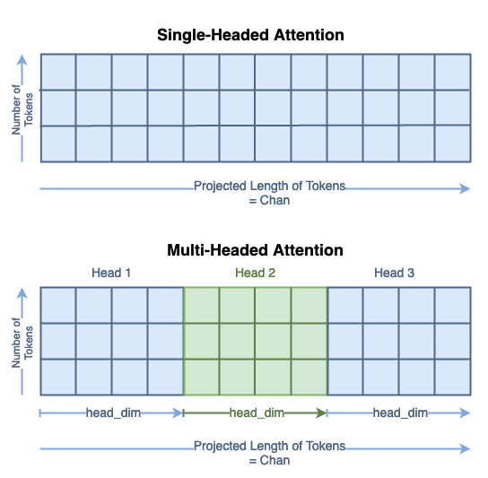
# Step 1: Calculate Q, K, Vqkv = MSA.qkv(x)print(qkv.shape)print('\t192 is basically 3x4x16, 3 is because of q, k, v, 4 is because of num_heads, 16 is because of head_dim')print('')# Reshape qkv to get q, k, vqkv = qkv.reshape(B, N, 3, MSA.num_heads, MSA.head_dim).permute(2, 0, 3, 1, 4)print(qkv.shape)print('\t3: for q, k, v\n\t13: batchsize\n\t4: num_heads\n\t100: num_tokens\n\t16: head_dim=(channels/num_heads) = 64/4 = 16')
torch.Size([13, 100, 192])
192 is basically 3x4x16, 3 is because of q, k, v, 4 is because of num_heads, 16 is because of head_dim
torch.Size([3, 13, 4, 100, 16])
3: for q, k, v
13: batchsize
4: num_heads
100: num_tokens
16: head_dim=(channels/num_heads) = 64/4 = 16
q, k, v = qkv[0], qkv[1], qkv[2]print('See that the dimensions for queries, keys, and values are all the same:')print('\tShape of Q:', q.shape, '\n\tShape of K:', k.shape, '\n\tShape of V:', v.shape)print('Dimensions for Queries are \n\tbatchsize:', q.shape[0], '\n\tattention heads:', q.shape[1], '\n\tnumber of tokens:', q.shape[2], '\n\tnew length of tokens:', q.shape[3])
See that the dimensions for queries, keys, and values are all the same:
Shape of Q: torch.Size([13, 4, 100, 16])
Shape of K: torch.Size([13, 4, 100, 16])
Shape of V: torch.Size([13, 4, 100, 16])
Dimensions for Queries are
batchsize: 13
attention heads: 4
number of tokens: 100
new length of tokens: 16
The next step is to calculate attention for each head i as shown below:
For every head, i
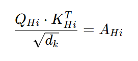
where dk is:
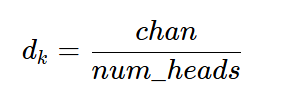
# Step 2: Calculate Attention for each headattn = (q * MSA.scale) @ k.transpose(-2, -1)print('Dimensions for Attn are:', attn.shape, '\n\tbatchsize:', attn.shape[0], '\n\tattention heads:', attn.shape[1], '\n\tnumber of tokens:', attn.shape[2], '\n\tnumber of tokens:', attn.shape[3])# Step 3: Normalize Attention with Softmaxattn = attn.softmax(dim=-1)print('Dimensions for Attn after softmax are:', attn.shape, '\n\tbatchsize:', attn.shape[0], '\n\tattention heads:', attn.shape[1], '\n\tnumber of tokens:', attn.shape[2], '\n\tnumber of tokens:', attn.shape[3])
Dimensions for Attn are: torch.Size([13, 4, 100, 100])
batchsize: 13
attention heads: 4
number of tokens: 100
number of tokens: 100
Dimensions for Attn after softmax are: torch.Size([13, 4, 100, 100])
batchsize: 13
attention heads: 4
number of tokens: 100
number of tokens: 100
# Step 4: Calculate "Attention" valuesx = attn @ vprint('Dimensions for Attn after softmax are:', x.shape, '\n\tbatchsize:', x.shape[0], '\n\tattention heads:', x.shape[1], '\n\tnumber of tokens:', x.shape[2], '\n\tlength of tokens:', x.shape[3])
Dimensions for Attn after softmax are: torch.Size([13, 4, 100, 16])
batchsize: 13
attention heads: 4
number of tokens: 100
length of tokens: 16
Now, we concatenate all x i’s :
x = x.transpose(1, 2).reshape(B, N, MSA.chan)print('Dimensions for x are:', x.shape, '\n\tbatchsize:', x.shape[0], '\n\tnumber of tokens:', x.shape[1], '\n\tlength of tokens:', x.shape[2])
Dimensions for x are: torch.Size([13, 100, 64])
batchsize: 13
number of tokens: 100
length of tokens: 64
Now, we got something similar as Single Headed Attention. Rest of the module remains same.
For skip connection, we still use V, but we have to reshape it to remove head dim
x = MSA.proj(x)print('Dimensions for x after projection are:', x.shape, '\n\tbatchsize:', x.shape[0], '\n\tnumber of tokens:', x.shape[1], '\n\tlength of tokens:', x.shape[2])orig_shape = (batch, num_tokens, token_len)print('Original shape:', orig_shape)curr_shape = x.shapeprint('Current shape:', curr_shape)# Skip Connection# flatten vprint('old v shape:', v.shape)v = v.transpose(1, 2).reshape(B, N, MSA.chan)print('new v shape:', v.shape)# skip connectionx = v + xprint('new x shape:', x.shape)
Dimensions for x after projection are: torch.Size([13, 100, 64])
batchsize: 13
number of tokens: 100
length of tokens: 64
Original shape: (13, 100, 49)
Current shape: torch.Size([13, 100, 64])
old v shape: torch.Size([13, 4, 100, 16])
new v shape: torch.Size([13, 100, 64])
new x shape: torch.Size([13, 100, 64])
Final Notes:
The learnable weights in an attention layer are found in the first projection from tokens to queries, keys, and values and in the final projection. The majority of the attention layer is deterministic matrix multiplication.